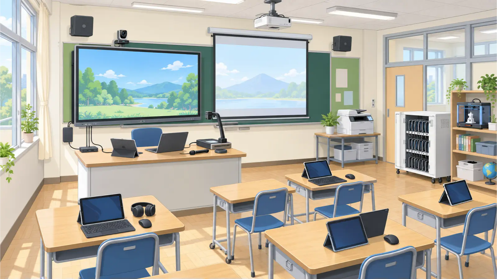

見せる・映す
画像、動画、端末画面、実物を教室全体へ提示します。
- よくある電子黒板／大型ディスプレイ
- よくあるプロジェクター／スクリーン
- よくある書画カメラ・実物投影機
- 学校による外部モニター／無線提示受信機
ICT BASIC FITNESS / SCHOOL PERIPHERALS
電子黒板、プロジェクター、書画カメラ、マイク、プリンタ、マウス、ヘッドセット。学校には、映像・音声・入力・記録・印刷を支える多様な外部機器があります。無線と有線を分けず、役割・信号・接続経路から理解します。
01 / CLASSROOM MAP
すべてが同じ教室にあるわけではありません。まず場所と役割から機器を見つけ、次に接続方法を確認します。名称が分からないときも、「何を映す・聞く・入力する機器か」なら説明できます。

123 456 789 101112画像、動画、端末画面、実物を教室全体へ提示します。
授業の音、発表、オンライン交流の声を入出力します。
文字、指示、手書き、特別な入力方法を端末へ伝えます。
教室の映像や音、実験・観察結果を取得して共有します。
紙、ラベル、立体物など、デジタルデータを実物にします。
信号、データ、電力を中継し、授業前の準備を支えます。
「これは何という製品ですか」より先に、①何をする機器か、②どの端末とつながるか、③映像・音声・データ・電力の何を運ぶか、④有線か無線か、を確認します。
02 / CONNECTION MAP
機器の名前だけで接続方法を決めつけず、端末から相手までの経路を確認します。インターネットが必要かどうかも、ここで分かれます。
DIRECT
Bluetooth、専用USBレシーバー、Wi‑Fi Directなど。マウスやイヤホンの基本的な通信では、通常、校内LANやインターネットを通りません。
最初に見る：電源／充電／ペアリング／USBレシーバー／接続先LOCAL NETWORK
ネットワークプリンタや一部の提示装置・受信機など。端末と機器のIP設定、接続先、ネットワーク分離、探索通信の扱いが関係します。
最初に見る：同じ接続先／IP設定／他端末から使えるか／校内ルールCLOUD / SERVICE
専用アプリ、アカウント、クラウド管理を利用する機器もあります。機器との接続に加えて、サービス障害、認証、通信制御も確認対象になります。
最初に見る：アプリ／アカウント／サービス状態／外部通信の許可たとえば「プロジェクターに無線で映す」と言っても、Wi‑Fi Directで直接つなぐ構成、校内LAN上の受信機を使う構成、専用アプリやクラウドを使う構成があります。
03 / CONNECTION METHODS
端末と近くの機器をペアリングして直接つなぎます。マウス、キーボード、イヤホン、スピーカーなどでよく使われます。
ネットワーク障害とは分けて考える小さな受信機をUSB端子に挿して、マウスやキーボードと無線通信します。見た目はBluetoothに似ていますが、別の方式です。
レシーバーの有無と組合せを確認APを介さず、端末とプリンタや提示装置などが直接つながります。接続中に学校のWi‑Fiから外れる構成もあります。
「直接接続」と「校内LAN接続」を区別端末と機器がそれぞれ校内ネットワークへ参加し、IP通信でつながります。プリンタや無線提示受信機などで使われます。
SSIDだけでなく、通信可能な範囲を見るAirPlay、Google Cast、Miracastなどは、製品や構成によって通信経路が異なります。名称だけで経路を決めつけません。
方式・受信機・必要なネットワークを確認04 / DEVICES AT SCHOOL
| 外部機器 | 主な接続方法 | 校内LAN・インターネット | 最初の確認 |
|---|---|---|---|
| マウス・キーボード | Bluetooth／専用USBレシーバー | 基本操作には通常不要 | 電源、電池、ペアリング、レシーバー、接続先 |
| イヤホン・スピーカー | Bluetooth／専用送受信機 | 音声転送自体には通常不要 | 充電、ペアリング、音量、ミュート、音声出力先 |
| プロジェクター・電子黒板 | Wi‑Fi Direct／校内LAN／無線受信機／専用アプリ | 構成によって必要 | 接続方式、入力切替、受信機、同じネットワーク、アプリ |
| プリンタ・複合機 | 校内LAN／Wi‑Fi Direct／専用アプリ・クラウド | 方式によって必要 | 接続先、IP、印刷先、キュー、用紙・エラー表示 |
| カメラ・書画カメラ | 専用無線／Wi‑Fi／USB受信機 | 構成によって必要 | 受信機、アプリ、映像入力、カメラ権限、充電 |
同じ製品分類でも接続方式は機種・設定・自治体の構成で異なります。製品名と型番、現在の接続方法を確認してから切り分けます。
05 / SIGNAL & CABLE
端子が挿さっても、必要な信号を運べなければ使えません。まず、出したいものが映像・音声・データ・電力のどれかを確認します。
画面や資料を表示します。VGAは基本的に映像のみです。別途音声接続が必要になる場合があります。
HDMIは映像と音声を1本で運べます。ただし提示装置にスピーカーがない、音声出力先が別、ミュート中などでは音は出ません。
3.5mm、6.3mm、XLR、RCAなどがあります。出力・入力、マイク・ライン・スピーカーでは信号の種類や大きさが異なります。
USBは周辺機器のデータ通信や給電に使います。USB‑Cは端子の形であり、映像・速度・給電能力は機器、ポート、ケーブルによって異なります。
注意：「HDMI 2.0ケーブル」のように機器の規格番号だけで呼ばず、ケーブルに表示された正式な性能区分を確認します。
覚え方：USB‑Cは「形」。その中を何が通れるかは、機器・ポート・ケーブルの三者で決まります。
注意：端子が似ていても、マイク入力・ライン入力・ヘッドホン出力・スピーカー出力は同じではありません。機器の表示と取扱説明書を確認します。
06 / SOUND & LATENCY
FEEDBACK
スピーカーから出た音をマイクが拾い、その音がアンプを通って再びスピーカーから出る。この循環が繰り返され、特定の音が「キーン」「ボー」と大きくなります。
LATENCY
映像・音声の取得、圧縮、無線伝送、バッファー、復号、表示装置の映像処理など、それぞれに時間がかかります。映像と音声を別々の経路へ送ると、ずれが目立つ場合があります。
WHY WIRED?
毎回のペアリングや機器探索を減らし、通信経路を固定し、無線混雑や電波状態による変動を受けにくくできます。音楽、動画、発表、式典など、遅延や接続失敗が進行を止める場面では有効です。
電源、入力切替、出力先、ケーブル、変換器、端末の画面出力設定を確認。
音声出力先、ミュート、提示装置のスピーカー有無、HDMI以外の音声経路を確認。
解像度、変換器、映像対応ポート、ケーブル性能、著作権保護された映像の扱いを確認。
音声と映像が同じ経路か、Bluetooth等を別経路で使っていないか、アプリ・受信機・表示装置の処理を確認。
07 / DIAGNOSE
充電、電池、電源ランプ、スリープ、物理スイッチを確認します。
Bluetooth、USBレシーバー、Wi‑Fi Direct、校内LAN、専用アプリを特定します。
その端末だけか、同型機すべてか、別の端末や別の教室では使えるかを比べます。
ペアリング先、プリンタ名、提示先、音声出力先、プロジェクターの入力を確認します。
通る場合は、接続先、IP設定、ネットワーク分離、探索や通信の許可を担当者へ確認します。
初期化、再ペアリング、機器のネットワーク設定変更は、影響と権限を確認してから行います。
Bluetooth全体の故障と決めず、音量・ミュート・再生アプリ・音声出力先を確認します。
直接接続か校内LAN経由かを確認し、受信機、入力切替、同じ通信範囲、探索通信の扱いを分けて考えます。
Wi‑Fi Directかネットワークプリンタかを確認します。別端末から印刷できるか、登録済みの印刷先が正しいかも比べます。
機器のWi‑Fi Directへ接続したことで、学校のWi‑Fiから外れた可能性を確認します。原因を断定せず接続状態を記録します。
08 / HANDOFF
「電子黒板に映りません」だけでなく、「3年1組・10時20分、Chromebook 1台から校内LAN経由の受信機が一覧に表示されない。他の2台でも同じ。受信機は起動し、HDMI入力は選択済み」のように、事実をそろえて渡します。
インターネットまでの通信を学ぶ →